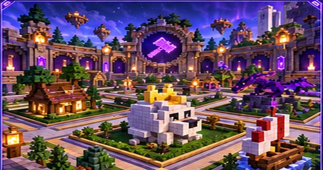
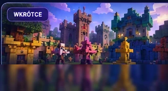
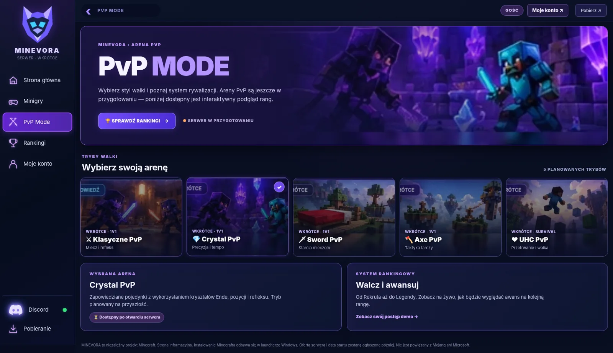
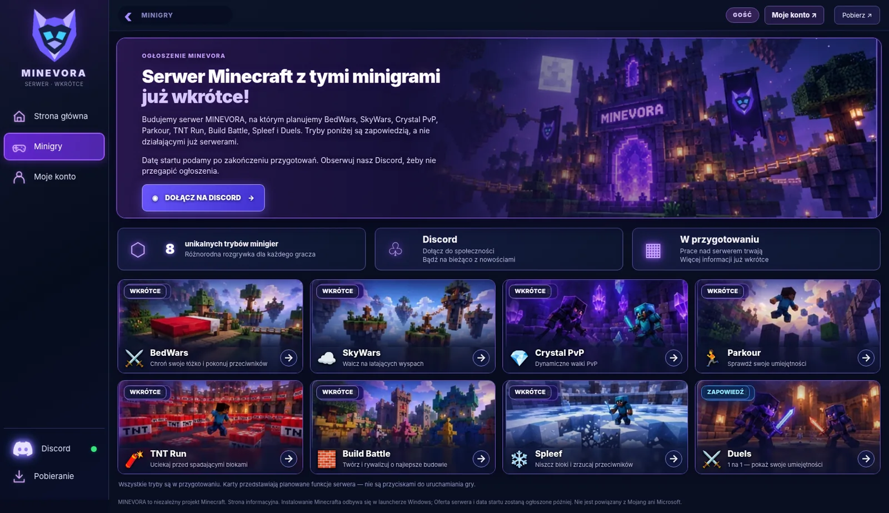
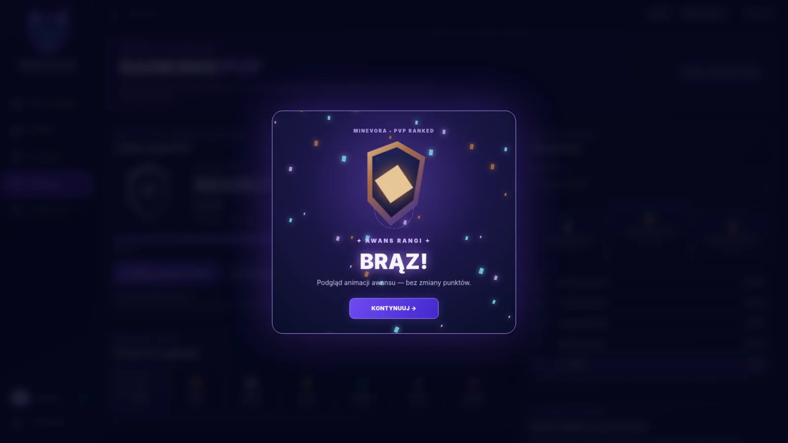

Marketplace
Planowany katalog darmowych i płatnych dodatków.
Odkrywaj minigry, PvP i wyjątkowe światy. Własny launcher i społeczność MINEVORA — wszystko w jednym stylu. Serwer jest w przygotowaniu.
Każda funkcja ma osobną zakładkę.
WITAJ W MINEVORA
Budujemy miejsce dla fanów Minecrafta: minigry, pojedynki i społeczność graczy. Serwer jest w przygotowaniu — datę otwarcia ogłosimy na Discordzie.
CO NOWEGO?
Launcher Windows 11 jest dostępny w wersji testowej. Serwer minigier dopiero przygotowujemy; nie podajemy niepotwierdzonej daty startu ani liczby graczy.
To będzie osobna przestrzeń dla map, budowli i dodatków. Sklep jest na etapie przygotowania — obecnie nie przyjmuje płatności, zamówień ani zakupów.

Planowany katalog darmowych i płatnych dodatków.

Materiały twórców będą dostępne po uruchomieniu sklepu.
OGŁOSZENIE MINEVORA
Budujemy serwer MINEVORA, na którym planujemy BedWars, SkyWars, Crystal PvP, Parkour, TNT Run, Build Battle, Spleef i Duels. Tryby poniżej są zapowiedzią, a nie działającymi już serwerami.
Datę startu podamy po zakończeniu przygotowań. Obserwuj nasz Discord, żeby nie przegapić ogłoszenia.
DOŁĄCZ NA DISCORDWszystkie tryby są w przygotowaniu. Karty przedstawiają planowane funkcje serwera — nie są przyciskami do uruchamiania gry.
Wybierz styl walki i poznaj system rywalizacji. Areny PvP są jeszcze w przygotowaniu — poniżej dostępny jest interaktywny podgląd rang.
Pojedynki jeden na jednego z klasycznym ekwipunkiem. Tryb planowany na premierę serwera.
⏳ Dostępny po otwarciu serweraOd Rekruta aż do Legendy. Zobacz na żywo, jak będzie wyglądać awans na kolejną rangę.
Zobacz swój postęp demo →Zdobądź punkty, pnij się po drabince i odblokuj nowe rangi. Teraz możesz przetestować ten system w trybie demonstracyjnym.
Do Brązu: 25 RP
Symulacja: punkty są przechowywane wyłącznie w tej przeglądarce. Nie są prawdziwymi wynikami serwera Minecraft.
Przykładowi gracze i wyniki. Publiczny ranking pojawi się dopiero po połączeniu z serwerem.
Wygrane podnoszą wynik, przegrane mogą go obniżać. Po przekroczeniu progu zdobywasz wyższą rangę i widzisz animację awansu.
Ważne: prawdziwe punkty i zwycięstwa będzie przyznawać wyłącznie serwer po rozegranym meczu — nie przyciski demo.
MINEVORA / KONTO
Jedno konto do strony MINEVORA i wejścia na stronę logowania z launchera. Nie musisz tworzyć dodatkowego hasła MINEVORA.
Zaloguj się istniejącym kontem Microsoft lub utwórz je na oficjalnej stronie Microsoft. MINEVORA nie zbiera ani nie przechowuje Twojego hasła.
Ładowanie logowania Microsoft…
Opcjonalna chmura: możesz przesłać nick, ulubioną minigrę, kolor i zdjęcie profilowe na prywatne konto MINEVORA. Microsoft może poprosić o zgodę na zakres profile.sync. Żadne hasła ani tokeny nie są przesyłane jako dane profilu.
Synchronizacja jest dobrowolna. Profil w tej przeglądarce pozostaje niezależny.
Twoje zdjęcie i ustawienia będą przechowywane na Cloudflare D1 do czasu ich zmiany lub usunięcia. Synchronizacja z launcherem Windows będzie wymagała osobnej aktualizacji aplikacji.
Przycisk „Zapisz profil” zachowuje dane lokalnie. Opcjonalne przyciski w sekcji „Synchronizacja” pozwalają osobno zapisywać lub pobierać dane na konto w chmurze. Launcher nie obsługuje jeszcze automatycznego pobierania tego profilu. Nie są to statystyki serwera Minecraft.
Pobierz launcher MINEVORA →Uwaga: dostęp do konta MINEVORA i posiadanie Minecraft Java to dwie różne rzeczy. Do uruchamiania gry launcher nadal wymaga autoryzacji oraz odpowiedniej licencji.
Wszystkie najważniejsze funkcje MINEVORA wyjaśnione prostym językiem. Zobacz, jak wyglądają ekrany i jak przygotować Minecrafta do uruchomienia.
Instalację gry obsługuje aplikacja Windows — strona WWW pokazuje informacje i podglądy, ale sama nie instaluje Minecrafta.
Obraz to wizualizacja na podstawie interfejsu projektu; nie przedstawia uruchomionej aplikacji Windows.
Osobne instalacje Minecrafta, nazwy profili i wybór zgodnego loadera.
Opcja automatycznego uzupełniania brakujących kompatybilnych plików. Każda wersja moda musi pasować do gry.
Uruchamia lokalną instancję Minecraft Java po autoryzacji konta i przygotowaniu plików gry.
W panelu aplikacji możesz zapisywać ustawienia moda dla profilu Fabric 1.21.1.
Przełączaj m.in. HP, głód, przedmiot w ręce, CPS, FPS, zbroję, efekty mikstur i celownik. Wybieraj położenie paneli i kolor akcentu.
Do działania nowych elementów w grze wymagany jest skompilowany, zgodny mod JAR. Kod źródłowy moda nie jest gotowym plikiem moda.
Zobacz dostępne ekrany oraz planowane tryby na MINEVORA.

Podgląd pięciu stylów: klasyczne 1v1, Crystal PvP, Sword PvP, Axe PvP i UHC PvP. Areny są planowane.
Przejdź do PvP Mode →Podium, tabela wyników, pasek progresu i pokazowa animacja awansu. Wyniki są demonstracyjne, nie pochodzą z serwera.
Zobacz ranking demo →
Prezentacja planowanych trybów, takich jak BedWars, SkyWars, TNT Run, Parkour, Build Battle, Spleef i Duels.
Przeglądaj minigry →
Pokaz nowej rangi i efektów cząsteczkowych. Włączysz go w demonstracji rankingu.
Sprawdź animację →Ważne: konto MINEVORA na stronie i licencja Minecraft Java są rozdzielone.
Logowanie do Minecraft Java jest osobne i wymaga ważnej licencji. Nie wpisuj hasła w nieznanych oknach.
W launcherze możesz wskazać lokalny plik skina PNG. Dostępność dodatkowych funkcji edytora zależy od wydania.
Dobrowolne pobranie lub wysłanie nicku, koloru, ulubionej minigry i awatara. Wymaga skonfigurowanej usługi.
Można wybierać oficjalne wersje i zgodne loadery. Nie każdy loader obsługuje każdą wersję. PvP HUD w obecnym kodzie jest przeznaczony dla Fabric 1.21.1.
Launcher zawiera mechanizm pobierania brakujących kompatybilnych dodatków. Nowy mod PvP HUD wymaga udostępnienia skompilowanego JAR; nie wystarcza sam kod źródłowy.
Jeszcze nie. Rankingi i awanse na stronie są demonstracją. Prawdziwa synchronizacja będzie wymagała działającego serwera i jego API.
Nie. Do instalowania i uruchamiania gry służy desktopowy launcher Windows, a strona udostępnia informacje, konto, przegląd funkcji i podgląd.
Nie. Projekt ma źródła i pliki do przygotowania instalatora, ale wydanie wymaga podpisu, testów Windows 11 i osobnej publikacji.
Sprawdź wygląd launchera albo przejdź do informacji o wydaniu Windows.
Podgląd planu interfejsu Windows 11 i rzeczywiste ekrany demonstracyjne strony wykorzystywanej przez aplikację. Nie jest to połączenie z uruchomionym Minecraftem.
MINEVORA / POBIERANIE
Launcher MINEVORA dla Windows 11 ma już kompilację testową i instalator, ale nadal wymaga podpisu cyfrowego zaufanego wydawcy oraz testów działania na Windows. Smart App Control może blokować obecne niepodpisane pliki.
🔧 Postęp prac nad launcherem ↗Oficjalny instalator będzie dostępny tutaj po podpisaniu wydania i pomyślnych testach na Windows 11. Nie wyłączaj Inteligentnej kontroli aplikacji Windows, aby uruchamiać niepodpisaną wersję testową.
MINEVORA to niezależny projekt Minecraft. Strona informacyjna. Instalowanie Minecrafta odbywa się w launcherze Windows; Oferta serwera i data startu zostaną ogłoszone później. Nie jest powiązany z Mojang ani Microsoft.